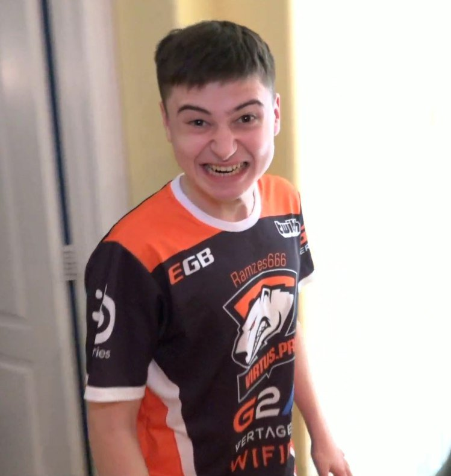

Буриков Аднрей Геннадиевич

Почему выбрал HTML,CSS
- Интересно узнать процесс верстки сайтов
- Продвинуться в этом направлении
- HTML и CSS основы верстки сайтов
Ссылка на любимый сайт
The best website ever
Немнго о себе
Мне 18 лет.
Я учусь в Мелитопольско Промышленно Економическом Колледже на 4 курсе.
Паралельно изучаю языки программирования C#, C++, TurboPascal.
Так же планирую учится за границей. Для этого нужно учить English. Fortunaly i started to learn English when i was 6 y.o. And now i have to prepare to the EILTS test.
Чего ожидаю от курса
- Хочу научится создавать хотя бы примитивные сайты с оформлением, анимациями и т.д.
- Узнать основы фронтенда и бекенда
- Стать фулстек разработчиком
- Продолжить обучие на JavaScript и т.д.
>